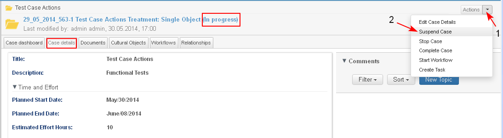

A case could be suspended and restarted more then once.
Preconditions
- A case could be suspended only if in state "In Progress".
- A case could be suspended/ restarted only by an user with respective permissions.
- A case can be restarted only if in state "Oh Hold" (if it was suspended before that).
Suspend Case
- The user starts the operation from:
- Personal dashboard/ My Cases dashlet/ button Actions/ Suspend Case
- Case Dashboard/ Case Details dashlet/ button Actions / Suspend Case
- Case Details page/ button Actions / Suspend Case (1-2)

- The system displays the confirmation message "Are you sure you want to 'Suspend Case'? Yes/ NO". The user clicks "Yes".

- The system suspends the case, performing the following automatic actions:
- The case status changes to "On Hold" (1).
- If there are tasks on the case which are in the active state "In Process", then they are automatically suspended and their state is also changed to "On Hold".
- Actions "Suspend Case", "Complete Case", Start Workflow" and "Create Task" are deactivated and become invisible in the list of possible actions.
- New actions is activated and appears in the "Actions" list : "Restart Case" (2-3)

Restart Case
- The user starts the operation from:
- Personal dashboard/ My Cases dashlet/ button Actions/ Restart Case
- Case Dashboard/ button Actions / Restart Case
- Case Details page/ button Actions / Restart Case (1-2-3) (see the screen above)
- The system displays the confirmation message "Are you sure you want to 'Restart Case'? Yes/ NO". The user clicks "Yes".

- The system restarts the case, performing the following automatic actions:
- The case status changes to "In progress" (1).
- All tasks that were suspended and in status "On Hold" are activated and their status changes to "In Process". If there were tasks manually set to status "On Hold" before the case was suspended, then these tasks are be automatically activated also and users may observe them.
- Actions "Suspend Case", "Complete Case", Start Workflow" and "Create Task" are activated and become visible in the list of possible actions (2).
- Action "Restart Case" becomes inactive and is not visible in the list.